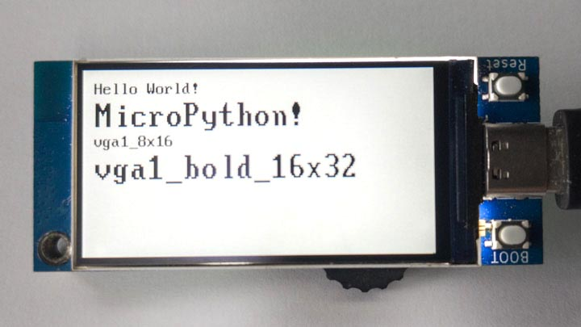
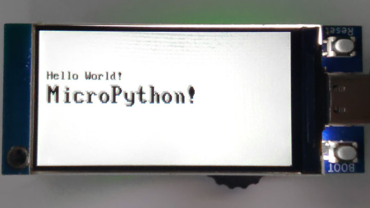

2023-11-01
显示文本字符
text 方法
text(font, s, x, y {, fg, bg, alpha})
使用指定的位图字体 font ，将文本字符 s 写入显示器的指定坐标，坐标 x,y 为文本的左上角。
可选参数 fg 和 bg 可以设置文本的前景色和背景色； 若不设置这两个参数，则前景色默认为白色，背景色默认为黑色。
alpha 默认为 255。
位图字体
BPI-Centi-S3 出厂固件中有包含两个位图字体文件。
vga1_8x16.mpy
vga1_bold_16x32.mpy
它们来自于 https://github.com/russhughes/st7789s3_esp_lcd/tree/main/fonts/bitmap 。
我从中选取了这两个最常用的，使用mpy-cross工具将它们转化为.mpy格式，以此缩小文件体积。
下载字体文件
如果你误删了字体文件，或擦除过flash，则需再次下载字体文件，你可以从前文链接中下载，也可从下方链接中下载已转化为.mpy格式的字体与例程文件。
显示文本

""" BPI-Centi-S3 170x320 ST7789 display """
import st7789
import tft_config
import vga1_8x16
import vga1_bold_16x32
"""
These default colors can be used:
BLACK BLUE CYAN GREEN
MAGENTA RED YELLOW WHITE
TRANSPARENT
Custom RGB colors:
color565(255,255,255)
"""
fg = st7789.BLACK
bg = st7789.WHITE
text_x = 10
text_y = 10
def main():
try:
tft = tft_config.config(rotation=1)
tft.init()
tft.fill(st7789.WHITE)
tft.text(vga1_8x16, "Hello World!", text_x, text_y, fg, bg, 255)
tft.text(vga1_bold_16x32, "MicroPython!", text_x, text_y+16, fg, bg, 255)
tft.text(vga1_8x16, "vga1_8x16", text_x, text_y+16+32, fg, bg, 255)
tft.text(vga1_bold_16x32, "vga1_bold_16x32",
text_x, text_y+16+32+16, fg, bg, 255)
tft.show()
except BaseException as err:
err_type = err.__class__.__name__
print('Err type:', err_type)
from sys import print_exception
print_exception(err)
finally:
tft.deinit()
print("tft deinit")
main()
使用透明背景与Alpha 通道制作阴影字体

合理利用 st7789.TRANSPARENT 作为文本的背景色，可以使文本的背景不发生变化。
再通过设置 text 方法 中的 alpha 参数，可以改变文本整体的透明度，范围为0~255。
""" BPI-Centi-S3 170x320 ST7789 display """
import st7789
import tft_config
import vga1_8x16
import vga1_bold_16x32
"""
These default colors can be used:
BLACK BLUE CYAN GREEN
MAGENTA RED YELLOW WHITE
TRANSPARENT
Custom RGB colors:
color565(255,255,255)
"""
fg = st7789.BLACK
bg = st7789.TRANSPARENT
text_x = 10
text_y = 50
def main():
try:
tft = tft_config.config(rotation=1)
tft.init()
tft.fill(st7789.WHITE)
tft.text(vga1_8x16, "Hello World!", text_x-1, text_y-1, fg, bg, 205)
tft.text(vga1_bold_16x32, "MicroPython!", text_x-2, text_y+16-2, fg, bg, 205)
tft.text(vga1_8x16, "Hello World!", text_x, text_y, fg, bg, 255)
tft.text(vga1_bold_16x32, "MicroPython!", text_x, text_y+16, fg, bg, 255)
tft.show()
except BaseException as err:
err_type = err.__class__.__name__
print('Err type:', err_type)
from sys import print_exception
print_exception(err)
finally:
tft.deinit()
print("tft deinit")
main()